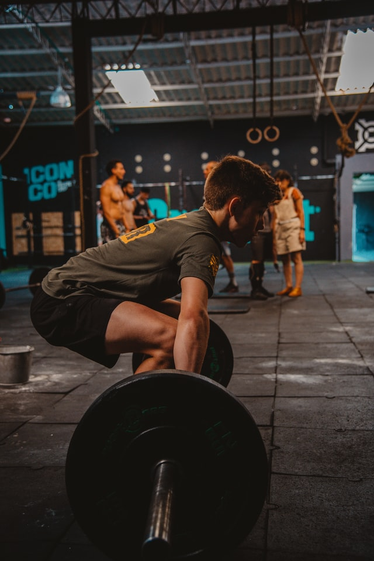
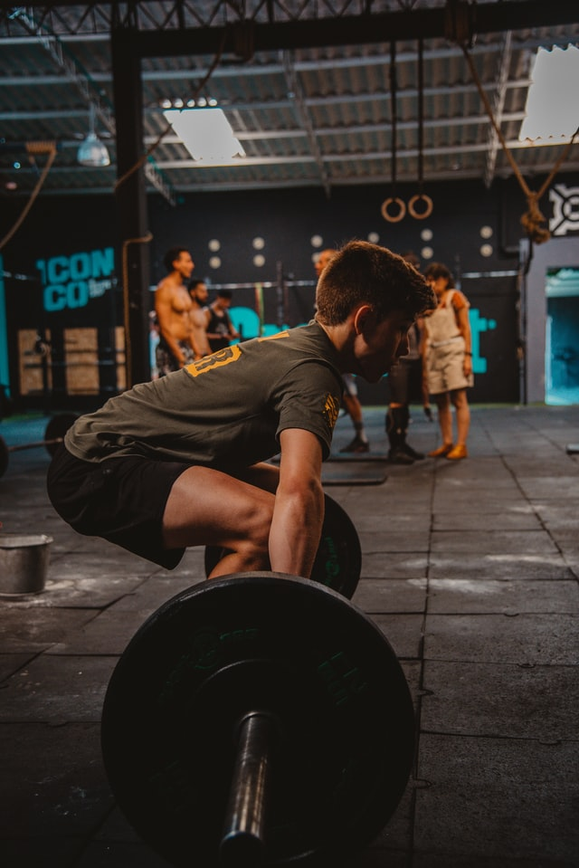

3대운동이란 데드리프트, 스쿼트(스쾃), 벤치프레스를 말한다. 바벨 운동 중에서 신체를 가장 많이 사용하는 운동이자 가장 힘든 운동이다.우리의 몸은 바벨 운동을 했을 때 가장 빠르게 강해질 수 있다. 바벨로 실시하는 3대운동은 중량을 컨트롤하기 위해서 신체의 수많은 근육을 유기적으로 사용한다. 그 결과 하중을 받은 뼈와 인대, 근육, 힘줄, 신경, 뇌에서부터 피부까지 중량을 이겨내기위해 반응하고 더 강해지게 된다.
이렇게 바벨 운동은 신체의 힘, 즉 스트렝스를 키우는 최고의 운동이다. 힘을 키우기위해서라면 두말할 나위가 없고 조각같은 몸을 만들기위해서도 일정한 중량 이상으로 운동을 해야하므로 도움이 된다. 그리고 신체의 전반적인 근육을 모두 사용해서 성장호르몬인 테스토스테론을 최고치로 이끌어 낼 수 있기 때문에 근육을 키우는 것이든 몸을 조각하는 것이든 도움이 된다. 입문자 또는 초보자의 경우에도 제대로 배울수만 있다면 3대운동을 통해 스트렝스를 키우면서 머신으로 보조 운동을 해준다면 근육의 성장속도가 훨씬 더 빠를 것이다.
 
